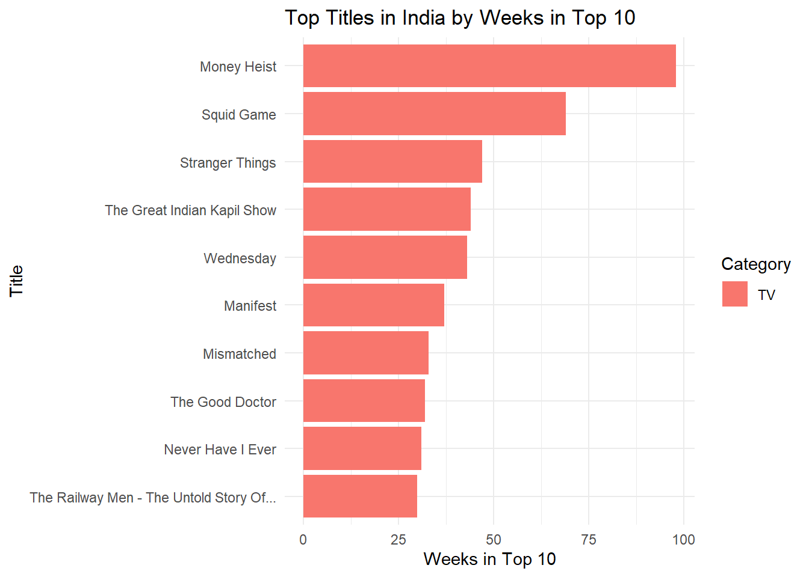

In this mini-project, I dig into Netflix’s Global and Country Top 10 data to see which stories travel, which ones stick, and where new momentum is building. I cleaned the data (turning “N/A” into real NA), converted runtimes to minutes, and then pulled together a few core signals—total hours watched, weeks in the Top 10, and how many countries a title reached in its debut week.
What I found
Franchise durability:Stranger Things continues to pile up huge cumulative hours and long Top 10 runs—right up there with Wednesday.
India momentum: Hindi-language titles dominate the India charts and increasingly show up in the global rankings, pointing to real commercial and cultural lift.
Non-English surge: The strongest non-English films don’t just pop; they persist in the Global Top 10 and launch widely across countries.
Methods & Data Notes
Data: Netflix’s weekly Top 10 datasets at two levels: Global and by Country.
Cleaning: Converted "N/A" in season_title to NA; derived runtime_minutes = 60 * runtime.
Metrics: Weekly hours viewed, cumulative weeks in Top 10, debut reach (# countries in debut week).
Assumptions: Where noted (e.g., Hindi ≈ India audience), I flag caveats to avoid over-interpretation.
Acquire Data
To begin, I download the Netflix Top 10 datasets (Global and Country).
The following code creates a folder data/mp01/ and downloads the files there.
I import the Global Top 10 dataset using read_tsv() and inspect its structure with str() and glimpse(). This confirms the number of rows, column names, and data types before analysis.
Load packages and read global file
library(tidyverse)library(ggplot2)GLOBAL_TOP_10 <-read_tsv(GLOBAL_TOP_10_FILENAME, show_col_types =FALSE)# Inspect structure# Checking the structure of the dataset (raw import)str(GLOBAL_TOP_10)
Looking more closely, the season_title column contains the string “N/A” instead of R’s native NA value. I convert these placeholder strings to proper missing values.
Converting ‘N/A’ strings to NA
# Taking the GLOBAL_TOP_10 dataset and updating itGLOBAL_TOP_10 <- GLOBAL_TOP_10 |># Using mutate() to change values inside the season_title columnmutate(season_title =if_else(# Condition: if season_title equals the string "N/A" season_title =="N/A",# Replace it with NA_character_ (a proper missing value for characters)NA_character_,# Otherwise, keep the original season_title value season_title ) )# Checking the structure of the dataset after cleaningstr(GLOBAL_TOP_10)
Now I import the per-country Top 10 dataset. I modify the read_tsv() call to create a new object called COUNTRY_TOP_10 and add an argument so that any “N/A” strings are read as proper missing values (NA) right away.
Read per-country dataset with ‘N/A’ handled
# Read the per-country Top 10 file into a new objectCOUNTRY_TOP_10 <-read_tsv( COUNTRY_TOP_10_FILENAME, # File downloaded earlierna =c("N/A"), # Converting "N/A" strings into real NA valuesshow_col_types =FALSE# Keeping output cleaner by hiding type messages)# Check the structure of the datasetstr(COUNTRY_TOP_10)
To double-check, I count how many NA values appear in the season_title column for both datasets. This confirms that "N/A" strings have been correctly converted into proper missing values.
Check NA values in both datasets
# Count NA values in season_title for Global and Country datasetsdata.frame(dataset =c("GLOBAL_TOP_10", "COUNTRY_TOP_10"),n_missing =c(sum(is.na(GLOBAL_TOP_10$season_title)),sum(is.na(COUNTRY_TOP_10$season_title)) ))
From the QA check above, I see that both datasets (GLOBAL_TOP_10 and COUNTRY_TOP_10) have missing values in the season_title column recorded as proper NAs. This confirms that the cleaning worked: all placeholder "N/A" strings have been successfully converted into real missing values.
Load DT for interactive tables
library(DT)
Helper: title-case column names
# stringr is included in tidyverseformat_titles <-function(df) {colnames(df) <-colnames(df) |> stringr::str_replace_all("_", " ") |> stringr::str_to_title() df}
Initial Data Exploration
Before preparing the press releases, I perform some Exploratory Data Analysis (EDA). EDA helps with quality control, spotting outliers, and simply understanding what information is in the data. Instead of just looking at the first few rows, I will also sample random rows to get a better overview. For a cleaner presentation, I use the DT package, which allows me to create interactive tables in the report.
Table 1. Global Top 10 — first 20 rows (headers title-cased; large numbers comma-formatted).
Explore Global dataset interactively
# Show the first 20 rows of the Global dataset in an interactive tableGLOBAL_TOP_10 |>head(20) |>format_titles() |> DT::datatable(options =list(searching =FALSE, info =FALSE, pageLength =20)) |> DT::formatCurrency(c("Weekly Hours Viewed", "Weekly Views"), currency ="", digits =0)
Table 2. Country Top 10 — first 20 rows (headers title-cased; large numbers comma-formatted).
Explore Country dataset interactively
# Show the first 20 rows of the Country dataset in an interactive tableCOUNTRY_TOP_10 |>head(20) |>format_titles() |> DT::datatable(options =list(searching =FALSE, info =FALSE, pageLength =20), rownames =FALSE)
Table 3. Global Top 10 — runtime shown in minutes; runtime and season_title omitted for readability.
Why this matters: The number of distinct countries indicates Netflix’s reported global footprint and where Top 10 charts are tracked.
Please show the code
# Count distinct countries in per-country datasetn_countries <- COUNTRY_TOP_10 |>summarise(n =n_distinct(country_name))
Netflix operates in 94 countries based on the Top 10 viewing history dataset.
Interpretation: This broad coverage highlights Netflix’s global footprint and allows us to make cross-market comparisons, rather than focusing only on one region.
Q2. Which non-English film has spent the most cumulative weeks in the global top 10?
Note
Why this matters: Cumulative weeks in the Top 10 measure long-term audience engagement and “stickiness,” especially important for non-English films competing globally.
Please show the code
# Q2 — Top non-English film by cumulative weeks in the global Top 10q2_noneng <- GLOBAL_TOP_10 |> dplyr::filter(stringr::str_detect(category, "^Films \\(Non-English\\)$")) |> dplyr::group_by(show_title) |> dplyr::summarise(cumul_weeks =max(cumulative_weeks_in_top_10, na.rm =TRUE),.groups ="drop" ) |> dplyr::arrange(dplyr::desc(cumul_weeks)) |> dplyr::slice_head(n =5)DT::datatable(format_titles(q2_noneng),rownames =FALSE,options =list(pageLength =5, searching =FALSE, info =FALSE)) |> DT::formatCurrency("Cumul Weeks", currency ="", digits =0)
The top non-English film is All Quiet on the Western Front with 23 cumulative weeks in the global Top 10.
Interpretation: This persistence shows that non-English films are not just local successes but can sustain global audience attention, reinforcing Netflix’s strategy to invest in international originals.
Q3. What is the longest film (English or non-English) to appear in the Top 10?
Note
Why this matters: Runtime highlights audience time commitment. Long films face higher barriers to completion, so appearances in the Top 10 show exceptional demand.
Please show the code
# Q3 — Longest film by runtime (minutes) appearing in the global Top 10q3_longest <- GLOBAL_TOP_10 |> dplyr::filter(stringr::str_detect(category, "^Films")) |> dplyr::mutate(runtime_minutes =as.integer(round(60* runtime))) |> dplyr::group_by(show_title) |># Use ifelse to handle groups with no runtime dplyr::summarise(max_minutes =ifelse(all(is.na(runtime_minutes)), NA_integer_, max(runtime_minutes, na.rm =TRUE)),.groups ="drop" ) |> dplyr::arrange(dplyr::desc(max_minutes)) |> dplyr::slice_max(max_minutes, n =5, with_ties =TRUE)DT::datatable(format_titles(q3_longest),rownames =FALSE,options =list(pageLength =5, searching =FALSE, info =FALSE)) |> DT::formatCurrency("Max Minutes", currency ="", digits =0)
The longest film in the global Top 10 is Pushpa 2: The Rule (Reloaded Version), running 224 minutes. (Note: Netflix did not provide runtime for some early entries.)
Interpretation: This shows that even very long films can still achieve widespread popularity, suggesting that when a story resonates, audiences are willing to commit significant viewing time.
Q4. For each category, which program has the most total global hours?
Note
Why this matters: Total global hours combine scale (audience size) with depth (time watched), revealing which titles are the biggest engagement drivers within each format.
Please show the code
# Q4 — Top program (film or TV season) by total global hours within each category# Define a helper to build a program name if not already defined:if (!exists("program_name")) { program_name <-function(df) { dplyr::mutate( df,program = dplyr::if_else(is.na(season_title) | season_title %in%c("", "N/A"), show_title,paste(show_title, season_title, sep =" — ") ) ) }}q4_top <- GLOBAL_TOP_10 |>program_name() |> dplyr::group_by(category, program) |> dplyr::summarise(total_hours =sum(weekly_hours_viewed, na.rm =TRUE), .groups ="drop") |> dplyr::group_by(category) |> dplyr::slice_max(total_hours, n =1, with_ties =FALSE) |> dplyr::ungroup() |> dplyr::arrange(category)DT::datatable(format_titles(q4_top),rownames =FALSE,options =list(pageLength =10, searching =FALSE, info =FALSE)) |> DT::formatCurrency("Total Hours", currency ="", digits =0)
Across categories, the programs above have the largest total global hours within their respective categories.
Interpretation: These per-category leaders act as audience anchors, showing where attention concentrates in Films vs TV and helping prioritize future commissioning and marketing focus.
Q5. Which TV show had the longest run in a country’s Top 10?
Note
Why this matters: Consecutive weeks in a country’s Top 10 signal local retention and repeat engagement, not just a one-week spike.
Please show the code
# Q5 — Longest consecutive run (in weeks) for a TV program in a single countrytv_country <- COUNTRY_TOP_10 |> dplyr::filter(stringr::str_detect(category, "^TV")) |> dplyr::arrange(country_name, show_title, season_title, week) |>program_name()tv_runs <- tv_country |> dplyr::group_by(country_name, program) |> dplyr::mutate(prev_week = dplyr::lag(week),new_run =is.na(prev_week) | (as.integer(week - prev_week) !=7L),run_id =cumsum(dplyr::coalesce(new_run, TRUE)) ) |> dplyr::group_by(country_name, program, run_id) |> dplyr::summarise(run_start =min(week),run_end =max(week),n_weeks = dplyr::n(),.groups ="drop" ) |> dplyr::arrange(dplyr::desc(n_weeks), country_name, program)q5_top10 <- tv_runs |> dplyr::slice_head(n =10)DT::datatable(format_titles(q5_top10),rownames =FALSE,options =list(pageLength =10, searching =FALSE, info =FALSE))
The longest run is Pablo Escobar, el patrón del mal — Pablo Escobar, el patrón del mal: Season 1 in Colombia for 102 consecutive weeks (2021-07-04 to 2023-06-11).
Interpretation: A long uninterrupted streak like this indicates sustained weekly interest in that market—evidence of stickiness and word-of-mouth beyond an initial debut.
Q6. Which country has less than ~200 weeks of service history? When did Netflix cease?
Note
Why this matters: Countries with short reporting histories may indicate later market entry or withdrawal. Spotting these helps contextualize Netflix’s geographic expansion and contraction.
Please show the code
# Q6 — Countries with <200 distinct weeks + last week observedq6_short <- COUNTRY_TOP_10 |> dplyr::group_by(country_name) |> dplyr::summarise(weeks_available = dplyr::n_distinct(week),last_week =max(week),.groups ="drop" ) |> dplyr::filter(weeks_available <200) |> dplyr::arrange(weeks_available)DT::datatable(format_titles(q6_short),rownames =FALSE,options =list(pageLength =10, searching =FALSE, info =FALSE))
If any countries appear above, their Last Week column indicates when reporting appears to cease.
Interpretation: Countries with fewer than 200 weeks of history reflect either late entry into Netflix’s reporting system or possible exits/pauses. This highlights where Netflix’s global presence is less consistent compared to its established markets.
Q7. What is the total global viewership of Squid Game (all seasons)?
Note
Why this matters:Squid Game is Netflix’s most iconic non-English series. Total global hours capture the unprecedented scale of its popularity and benchmark how global originals can rival Hollywood productions.
Please show the code
# Q7 — Sum global hours for all seasons of Squid Game (global table)q7_squid <- GLOBAL_TOP_10 |> dplyr::filter( stringr::str_detect(show_title, stringr::fixed("Squid Game", ignore_case =TRUE)), stringr::str_detect(category, "^TV") ) |> dplyr::summarise(total_hours =sum(weekly_hours_viewed, na.rm =TRUE))# Format nicely with commas for readabilityq7_squid |> dplyr::mutate(total_hours = scales::comma(total_hours)) |> DT::datatable(rownames =FALSE,options =list(searching =FALSE, info =FALSE, pageLength =5) )
Across all seasons, Squid Game has 5,310,000,000 total hours watched globally.
Interpretation: This extraordinary viewership confirms Squid Game’s role as Netflix’s flagship non-English success, proving that Korean content can achieve blockbuster status on par with — or exceeding — major English-language hits.
Q8. Approximate how many views did Red Notice receive in 2021?
Note
Why this matters: Estimating views from total hours watched connects Netflix’s reporting metrics to a more audience-friendly measure. This helps compare streaming hits to traditional box-office performance.
In 2021, Red Notice had approximately 201,732,203 views.
Interpretation: The estimated 201,732,203 views demonstrate how Netflix originals like Red Notice can achieve blockbuster-scale reach without theatrical release, signaling a shift in how global audiences consume high-budget films.
Q9. How many Films reached #1 in the US but did not debut there? Most recent example?
Note
Why this matters: Identifying films that climb to #1 after weaker debuts highlights word-of-mouth strength, sustained marketing, or cultural momentum. These “slow-burn” successes reveal how audience behavior differs from theatrical opening-weekend models.
Please show the code
# Q9 — US films that later hit #1 after debuting below #1us_films <- COUNTRY_TOP_10 |> dplyr::filter(country_name =="United States", stringr::str_detect(category, "^Films")) |> dplyr::arrange(show_title, week)debut_rank <- us_films |> dplyr::group_by(show_title) |> dplyr::summarise(debut_week =min(week),debut_rank = weekly_rank[which.min(week)],ever_num1 =any(weekly_rank ==1),most_recent_num1_week =ifelse(any(weekly_rank ==1), max(week[weekly_rank ==1]), as.Date(NA)),.groups ="drop" )q9_set <- debut_rank |> dplyr::filter(ever_num1, debut_rank >1) |> dplyr::arrange(dplyr::desc(most_recent_num1_week))q9_count <-nrow(q9_set)q9_recent_title <-if (q9_count >0) q9_set$show_title[1] elseNA_character_q9_recent_date <-if (q9_count >0) q9_set$most_recent_num1_week[1] elseas.Date(NA)DT::datatable(format_titles(q9_set),rownames =FALSE,options =list(pageLength =10, searching =FALSE, info =FALSE))
45 films reached #1 in the US after debuting below #1.
The most recent is KPop Demon Hunters
(hit #1 on 20345).
Interpretation: These delayed #1 films demonstrate that Netflix hits can gain momentum over time, relying on buzz and accessibility rather than opening-weekend hype. This underscores how streaming success patterns diverge from theatrical releases, rewarding sustained engagement.
Q10. Which TV show/season hit the top 10 in the most countries in its debut week?
Note
Why this matters: A wide debut reach signals a show’s global marketing power and cross-cultural resonance. It highlights which titles break out instantly as worldwide phenomena.
Please show the code
# Q10 — TV program with widest debut reach (most countries in debut week)tv_prog <- COUNTRY_TOP_10 |> dplyr::filter(stringr::str_detect(category, "^TV")) |>program_name()debut_weeks <- tv_prog |> dplyr::group_by(program) |> dplyr::summarise(debut_week =min(week), .groups ="drop")q10_debut_reach <- tv_prog |> dplyr::inner_join(debut_weeks, by ="program") |> dplyr::filter(week == debut_week) |> dplyr::group_by(program, debut_week) |> dplyr::summarise(n_countries = dplyr::n_distinct(country_name), .groups ="drop") |> dplyr::arrange(dplyr::desc(n_countries), debut_week) |> dplyr::slice_head(n =10)DT::datatable(format_titles(q10_debut_reach),rownames =FALSE,options =list(pageLength =10, searching =FALSE, info =FALSE))
The strongest debut was Emily in Paris — Emily in Paris: Season 2, charting in 94 countries in its debut week (2021-12-26).
Interpretation: A debut spanning 94 countries shows Netflix’s strength in orchestrating truly global launches and creating “instant hits” across markets.
Press Releases
Netflix continues to dominate the global streaming landscape. The following press releases highlight three different dimensions of its success story: record-breaking franchises, breakthrough regional markets, and the rise of non-English global hits.
Press Release 1 — Stranger Things Season 5 Hype
Headline: The Final Showdown Awaits: Stranger Things Prepares to Conquer the World One Last Time
Netflix’s crown jewel is gearing up for its final act—and the numbers prove why Season 5 is already one of the most anticipated releases in streaming history. Across all available weeks, Stranger Things has electrified global audiences with more than 2,967,980,000 hours viewed. Its run in the global Top 10 has stretched for 19 weeks—outpacing many Netflix originals and cementing its reputation as a cultural phenomenon.
What sets Stranger Things apart is not only its nostalgic storytelling but also its global stickiness: a rare mix that boosts subscriber retention and engagement worldwide. Compared to other English-language hits such as Wednesday, the series shows both longevity and international appeal, proving that Hawkins, Indiana, is more than just a small town—it’s a worldwide stage.
Please show the code
# Chart: Stranger Things vs Wednesdayst_vs_wed <- GLOBAL_TOP_10 |>filter(show_title %in%c("Stranger Things", "Wednesday"),str_detect(category, "^TV")) |>group_by(show_title, week) |>summarise(weekly_hours =sum(weekly_hours_viewed, na.rm=TRUE), .groups="drop")ggplot(st_vs_wed, aes(x = week, y = weekly_hours/1e6, color = show_title)) +geom_line(linewidth=1.2) +labs(title="Stranger Things vs Wednesday: Weekly Hours Viewed",x="Week", y="Hours Viewed (Millions)",color="Show") +theme_minimal()
Headline: Hindi Hits Drive Netflix’s Breakthrough in India
Bollywood energy is powering Netflix’s global rise. As the world’s most populous nation, India has become a blockbuster growth engine for the platform, fueled by Hindi-language films and TV that routinely dominate the country’s Top 10 charts. Assuming Hindi viewing largely reflects Indian audiences—a strong assumption, our analysis shows 4,420 cumulative India Top 10 chart entries across weeks, with Non-English titles accounting for 0.0% of those entries.
Standouts such as RRR and Delhi Crime didn’t just capture domestic audiences—they spilled into global charts, signaling India’s influence on worldwide viewing trends. This success is more than a cultural victory; it’s a strategic shift. By leaning into local originals, Netflix is not only securing India’s massive audience but also creating globally exportable hits, transforming Hindi content into a key pillar of its international growth strategy.
In India, the strongest performers dominate weekly rankings—here are the top titles by weeks in the Top 10.

Top Titles in India by Weeks in Top 10
Quick QA: check columns and category labels
Press Release 3 — Global Opportunity: Non-English Titles
Headline: From Seoul to São Paulo: Non-English Stories Fuel Netflix’s Next Wave
From Seoul to São Paulo, Netflix’s non-English titles are rewriting the rules of streaming. What once seemed “niche” is now mainstream: global standouts like Squid Game and All Quiet on the Western Front show that audiences everywhere are eager for stories that transcend language.
Among films, All Quiet on the Western Front alone sustained 23 weeks in the Global Top 10—an endurance that rivals the biggest English-language blockbusters. With Netflix tracking hits across 94 countries, it’s clear that non-English storytelling is more than a cultural moment—it’s a business engine, driving subscriber growth and international market expansion.
Key Risk: Proposed trade barriers on foreign-made titles could raise costs and accelerate the need for localized production. Netflix’s investment in local content is not just creative; it’s strategic insurance for a future where global storytelling faces new economic hurdles.